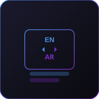

منصات مؤسسية تعمل بفعالية باللغتين العربية والإنجليزية.
صممت الأنظمة ثنائية اللغة في BTS للمؤسسات التي تعمل عبر الأسواق الناطقة بالعربية والإنجليزية. تحتاج العديد من الشركات العالمية والإقليمية إلى منصات تدعم لغات متعددة دون خلق ارتباك أو تجارب مستخدم غير متسقة أو سير عمل مكرر.
تبني BTS أنظمة مؤسسية ثنائية اللغة تسمح للفرق والعملاء وأصحاب المصلحة بالعمل بسلاسة باللغتين العربية والإنجليزية. يشمل ذلك اتجاه واجهة المستخدم والمصطلحات ومنطق سير العمل وتنسيقات التقارير وإمكانية الوصول لكل من المستخدمين العرب والإنجليز.
المؤسسات التي تحتاج إلى منصات مؤسسية أو لوحات تحكم أو أنظمة ذكاء اصطناعي تعمل بفعالية باللغتين العربية والإنجليزية.
تساعد BTS المؤسسات على بناء أنظمة ثنائية اللغة مصممة للاستخدام التجاري الحقيقي.
← العودة إلى الرئيسية ابدأ مشروعك ←